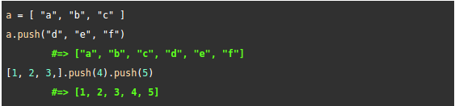
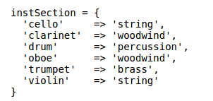

Arrays
An array is a list of any number of any type of object and the objects within it are both ordered and indexed with integers. The order of the objects begins at zero and a negative number means you are counting from the end of the array. A useful way of using arrays is to iterate through them, often with a loop. This way, you can access each element in the array without writing a lot of code by using a counter that simply adds one to the index of the array in each iteration. "push" is a useful method with arrays because it allows you to easily add specific elements into the array as you can see in the code below.

Hashes
Just like arrays, hashes are collections of elements that have indexes and the objects can be accessed using a key. In Ruby, these keys are always integers, however, in hashes, you can select any type of object to be a key. Therefore, hashes can be more flexible than arrays, albeit more complex. Also, hashes use braces to define their contents, whereas arrays use square brackets. Additionally, each entry in a hash must have both a key and a value, while arrays only have a vowel. An example of a hash is depicted below:

Summary
Overall, the main difference between a hash and an array is that hashes can use any type of key for each value and these keys must be defined when you enter the values. The elements in arrays, on the other hand, are automatically given a number index corresponding to theit position in the array. The implication of this is that arrays can be easier and simpler to use, but you can do more different things with hashes.